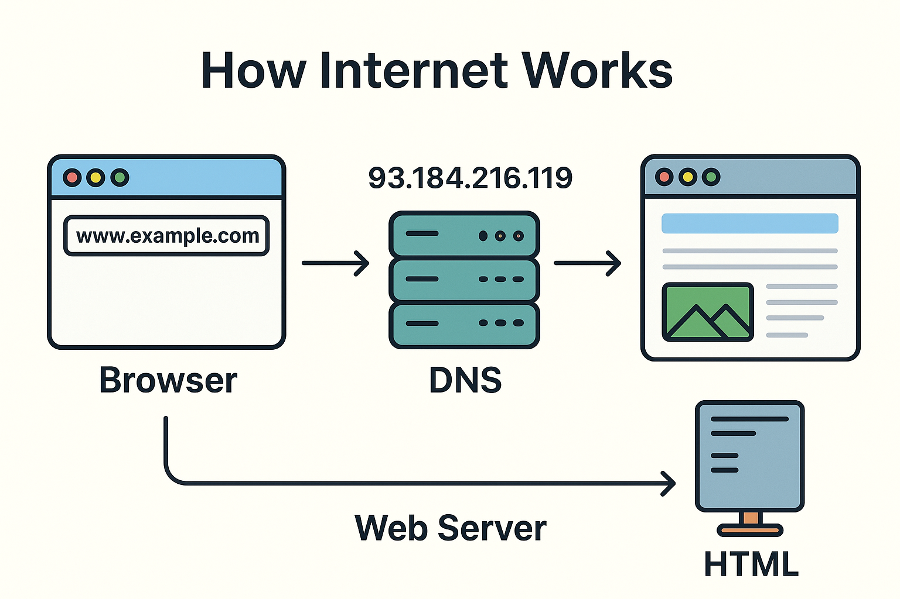

How the Internet Works

The
internet connects computers around the world so we can share and access information quickly.
Below are some key concepts that explain how it all works:
Core Internet Concepts
- What is an IP Address? An IP address (Internet Protocol address) is a unique set of numbers assigned to each device connected to the internet. It acts like a home address that helps devices find and communicate with each other.
Example:"Websites need IP addresses to work because they tell your computer exactly where to send and receive data — just like a GPS location."
- What is DNS(Domain Name System)? The Domain Name System (DNS) works like the internet’s phone book.
It translates domain names (like www.google.com) into IP addresses (like 142.250.190.36), so browsers can load websites.
Example:"DNS lets you visit www.google.com instead of having to type a long string of numbers — it’s easier to remember names than IP addresses."
- What is a Domain Name? A domain name is the easy-to-remember name of a website, like openai.com
It represents the IP address of the web server behind the scenes.
Example:"People buy domain names for websites instead of using IP addresses because domain names are easier for humans to read, share, and remember."
Browsers and HTML
- What is a Web Browser? A web browser is a software application (like Chrome, Firefox, or Safari) that lets you access and interact with websites on the internet.
Example:"A browser helps users view websites, fill out forms, watch videos, and click links — it turns code into things you can see and use."
- What is HTML?HTML (HyperText Markup Language) is the main language used to create and structure content on the web. It tells the browser how to display text, images, links, and more.
Example:"HTML is considered the backbone of web pages because it provides the basic building blocks for content and layout."
- What happens when you enter a URL into a Browser?
- You type a URL (like www.google.com) into the browser.
- The browser sends a request to a DNS server to get the IP address.
- It then requests the website's files from the web server at that IP address.
- The server sends back HTML, CSS, and images.
- The browser reads the HTML and displays the web page on your screen.
Questions After Experimenting
- What happens if you forget to close a tag like h1?The browser may render the entire page as a heading because it doesn't know where the heading ends.
- What is the purpose of the a tag’s href attribute?The href attribute tells the browser where the link should go when clicked.
- How does saving your file as .html affect how your browser opens it?It tells the browser to treat the file as a web page and render the HTML code properly.